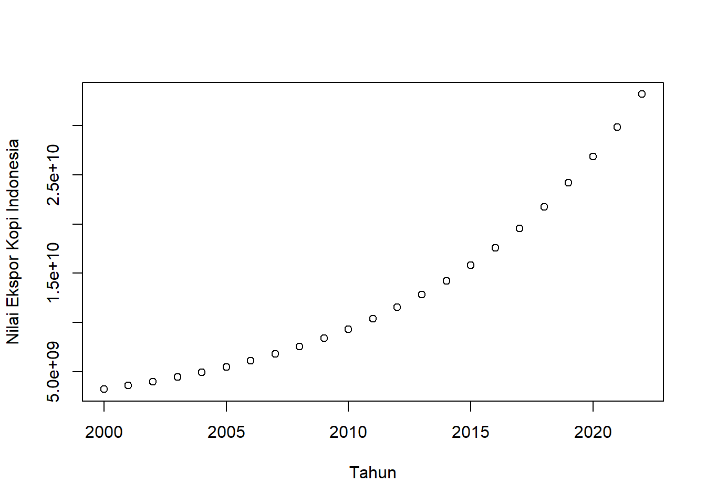
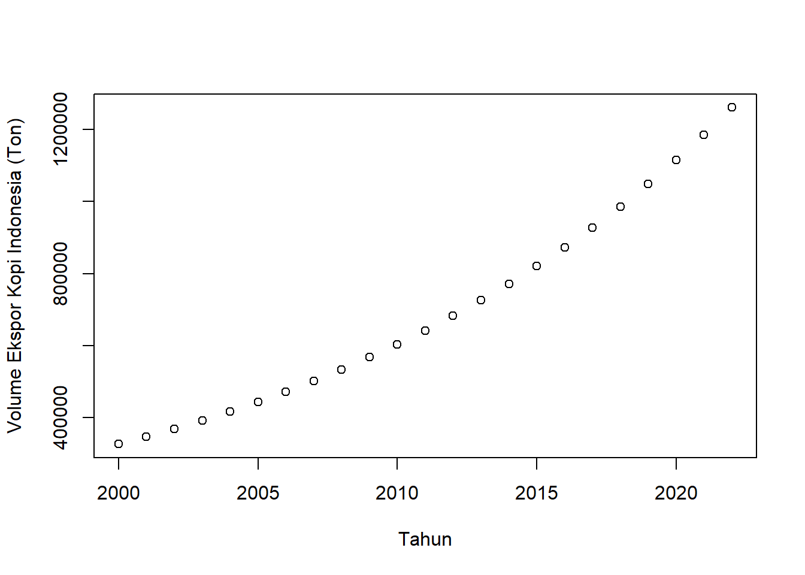
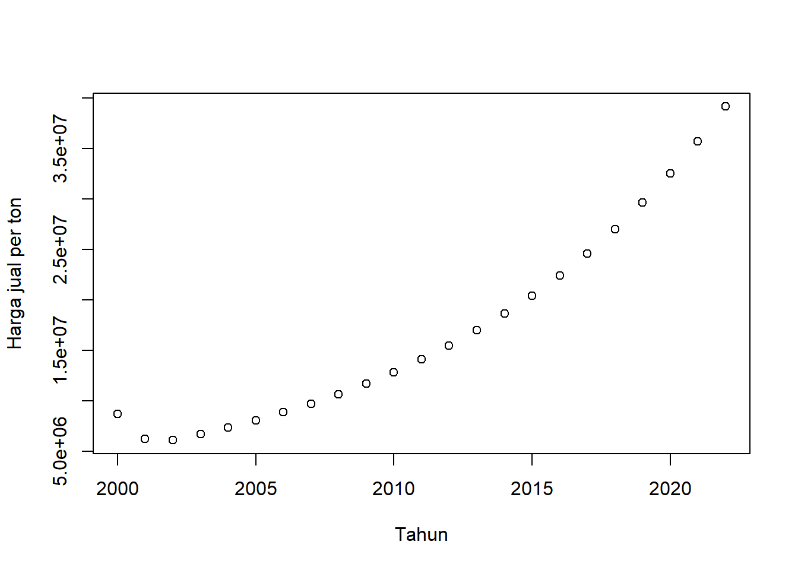
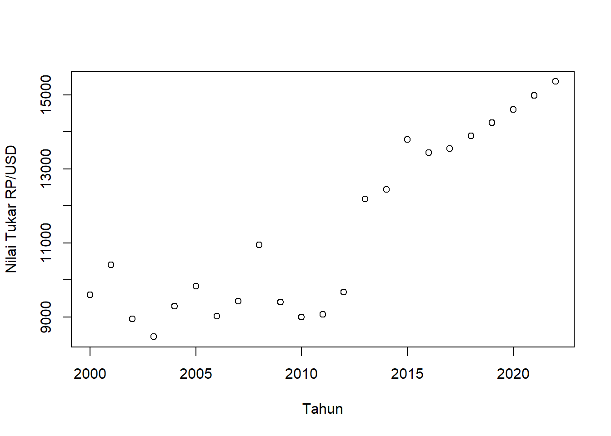
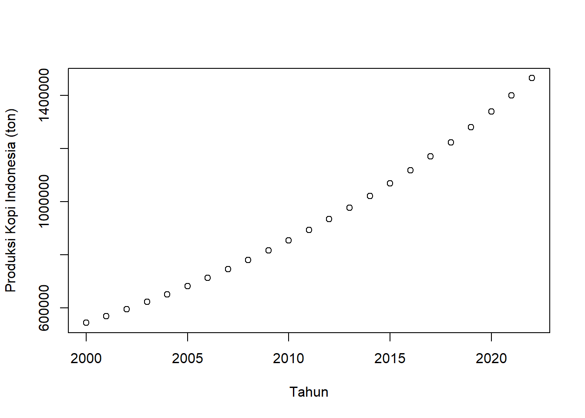
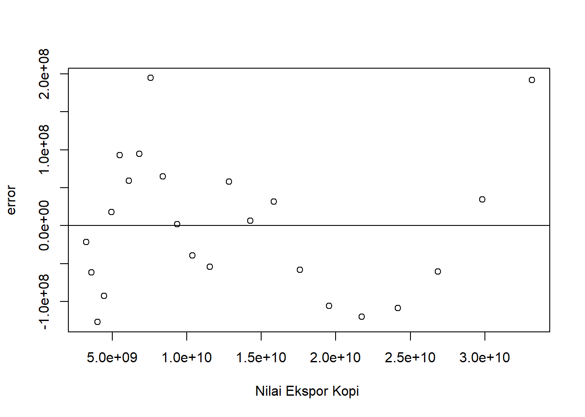
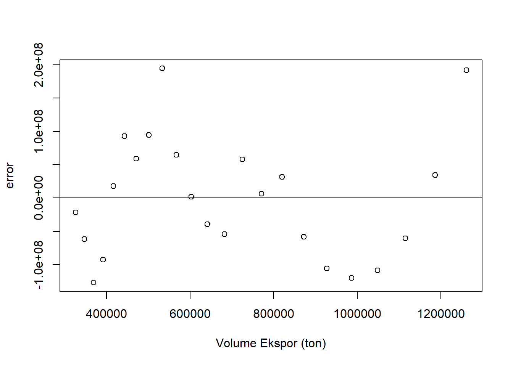
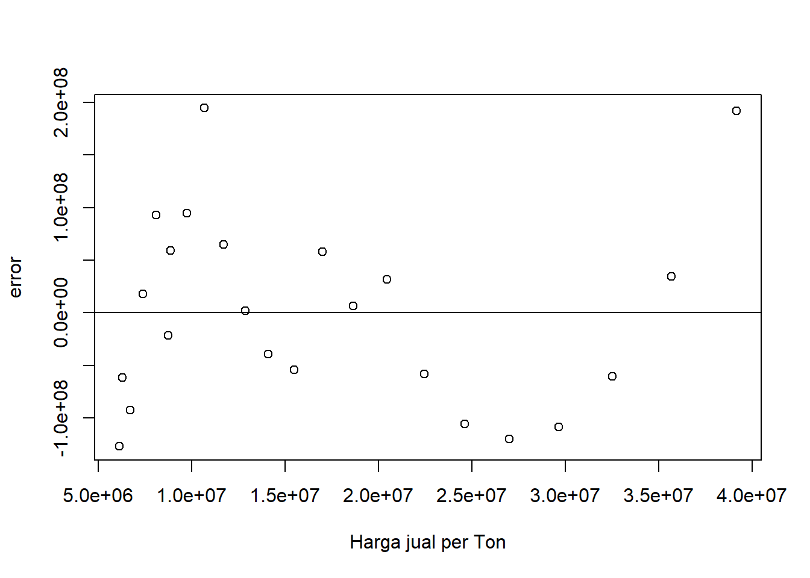
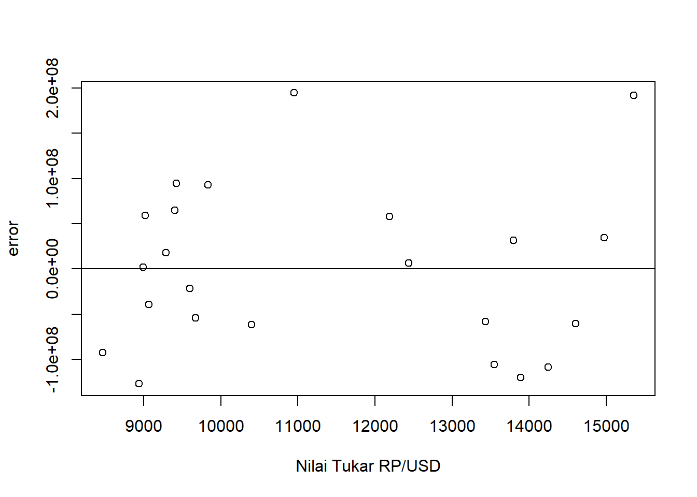
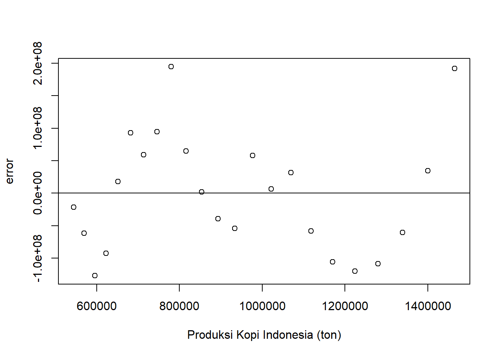

setwd("D:/METOPEL UAS/FEBRY METOPEL")
library(readxl)
library(tidyverse)
library(kableExtra)Pengaruh Nilai Tukar dan Total Produksi Terhadap Nilai Ekpor Kopi Indonesia.
Metode Penelitian Politeknik APP Jakarta

0.1 Pendahuluan
0.1.1 Latar belakang
Indonesia, sebagai salah satu produsen kopi terbesar di dunia, memiliki peran penting dalam pasar kopi global. Nilai ekspor kopi Indonesia dipengaruhi oleh berbagai faktor, termasuk Nilai Tukar, Harga Jual per Ton, Total Produksi, dan Volume Ekspor. Penelitian ini bertujuan untuk menganalisis pengaruh variabel-variabel tersebut terhadap Nilai Ekspor Kopi Indonesia.
Pertama, Nilai Tukar dapat mempengaruhi daya saing produk ekspor, termasuk kopi. Fluktuasi nilai tukar bisa berdampak pada harga ekspor dan impor, yang pada gilirannya mempengaruhi volume dan nilai ekspor.
Kedua, Harga Jual per Ton juga menjadi faktor penting. Harga jual yang tinggi dapat meningkatkan nilai ekspor, asalkan hal ini tidak berdampak negatif pada volume ekspor.
Ketiga, Total Produksi Kopi di Indonesia berpotensi mempengaruhi nilai ekspor. Produksi yang lebih tinggi dapat meningkatkan volume ekspor, asalkan permintaan global tetap kuat.
Terakhir, Volume Ekspor juga mempengaruhi Nilai Ekspor. Volume ekspor yang lebih tinggi akan meningkatkan nilai ekspor, asalkan harga jual per ton tetap stabil.
Penelitian ini akan menggunakan metode regresi linear berganda untuk menganalisis pengaruh variabel-variabel tersebut. Penelitian ini diharapkan dapat memberikan wawasan baru bagi mahasiswa dan peneliti lainnya yang tertarik pada topik ini.
0.1.2 Ruang lingkup
Ruang lingkup penelitian ini mencakup beberapa aspek berikut:
Variabel Penelitian: Penelitian ini akan fokus pada empat variabel utama, yaitu Nilai Tukar, Harga Jual per Ton, Total Produksi, dan Volume Ekspor. Analisis akan dilakukan untuk menentukan bagaimana variabel-variabel ini mempengaruhi Nilai Ekspor Kopi Indonesia.
Metodologi: Penelitian ini akan menggunakan metode regresi linear berganda. Metode ini dipilih karena dapat mengukur pengaruh simultan dari beberapa variabel independen terhadap variabel dependen.
Data: Data yang digunakan dalam penelitian ini akan mencakup data historis terkait variabel-variabel yang disebutkan di atas. Sumber data akan dipilih berdasarkan ketersediaan dan keandalan data.
Batasan: Penelitian ini tidak akan membahas peran pemerintah dan kebijakan terkait dalam pengaruh terhadap Nilai Ekspor Kopi Indonesia. Fokus penelitian ini adalah pada faktor-faktor pasar dan produksi.
Aplikasi: Hasil penelitian ini diharapkan dapat memberikan wawasan baru bagi mahasiswa dan peneliti lainnya yang tertarik pada topik ini. Selain itu, hasil penelitian ini juga dapat bermanfaat bagi pelaku industri kopi di Indonesia untuk memahami dinamika pasar dan produksi lebih baik.
0.1.3 Rumusan masalah
Berikut adalah rumusan masalah yang dapat diangkat berdasarkan topik penelitian Anda:
- Bagaimana pengaruh Nilai Tukar terhadap Nilai Ekspor Kopi Indonesia?
- Apakah Harga Jual per Ton memiliki dampak signifikan terhadap Nilai Ekspor Kopi Indonesia?
- Sejauh mana Total Produksi Kopi di Indonesia mempengaruhi Nilai Ekspor Kopi Indonesia?
- Bagaimana hubungan antara Volume Ekspor dan Nilai Ekspor Kopi Indonesia?
Rumusan masalah ini bertujuan untuk memahami lebih dalam tentang faktor-faktor yang mempengaruhi Nilai Ekspor Kopi Indonesia. Penelitian ini akan menggunakan metode regresi linear berganda untuk menganalisis hubungan antara variabel-variabel tersebut.
0.1.4 Tujuan dan manfaat penelitian
Berikut adalah tujuan dan manfaat penelitian yang diusulkan:
Tujuan Penelitian:
- Nilai Tukar: Untuk mengetahui pengaruh Nilai Tukar terhadap Nilai Ekspor Kopi Indonesia dan memberikan pemahaman lebih dalam tentang bagaimana fluktuasi nilai tukar dapat mempengaruhi ekonomi ekspor.
- Harga Jual per Ton: Untuk menganalisis bagaimana Harga Jual per Ton mempengaruhi Nilai Ekspor Kopi Indonesia dan memberikan wawasan tentang pentingnya penentuan harga dalam strategi ekspor.
- Total Produksi: Untuk mengevaluasi bagaimana Total Produksi Kopi di Indonesia mempengaruhi Nilai Ekspor Kopi Indonesia dan memberikan pemahaman lebih lanjut tentang hubungan antara produksi dan ekspor.
- Volume Ekspor: Untuk menentukan bagaimana Volume Ekspor mempengaruhi Nilai Ekspor Kopi Indonesia dan memberikan pemahaman lebih lanjut tentang dinamika volume dan nilai ekspor.
- Metode Analisis: Untuk menerapkan metode regresi linear berganda dalam menganalisis data, memberikan pemahaman praktis tentang bagaimana metode ini dapat digunakan dalam penelitian ekonomi.
Manfaat Penelitian:
Bagi Mahasiswa: Hasil penelitian ini dapat memberikan wawasan baru bagi mahasiswa yang tertarik pada topik ini dan dapat digunakan sebagai referensi untuk penelitian lebih lanjut.
Bagi Peneliti: Penelitian ini dapat memberikan kontribusi pada literatur yang ada dan membantu peneliti lain dalam memahami faktor-faktor yang mempengaruhi Nilai Ekspor Kopi Indonesia.
Bagi Industri Kopi: Hasil penelitian ini dapat membantu pelaku industri kopi di Indonesia untuk memahami lebih baik tentang dinamika pasar dan produksi, dan dapat digunakan dalam merumuskan strategi ekspor yang lebih efektif.
0.1.5 Package
0.2 Studi pustaka
Ekspor menurut keputusan mentri perindustrian dan perdagangan Nomor 182/MPP/Kep/4/1998 ketentuan umum di Bidang Ekspor, menyatakan bahwa ekspor merupakan kegiatan mengeluarkan barang dan jasa dari daerah pabean suatu negara. Adapun daerah pabean di definisikan sebagai wilayah Republik Indonesia yang meliputi wilayah darat, perairan dan ruang udara di atasnya, serta tempat-tempat tertentu di zona ekonomi eksklusif dan landas kontinen yang di dalamnya berlaku undang undang No.10 tahun 1995 tentang Kepabean.
Menurut definisi lain, ekspor merupakan penjualan barang dan jasa secara luas dari dalam negeri ke luar negeri (Mankiw, 2006).
Sedangkan menurut Priadi (2000) kegiatan ekspor merupakan sistem perdagangan yang dilakukan dengan cara mengeluarkan barang-barang dari dalam negeri ke luar negeri berdasarkan ketentuan yang berlaku.
Kurs dapat dijadikan alat untuk mengukur kondisi perekonomian suatu negara. Pertumbuhan nilai mata uang yang stabil menunjukkan bahwa negara tersebut memiliki kondisi ekonomi yang relatif baik. (Salvator, 1997).
Kopi merupakan salah satu komoditas satu komoditas perkebunan yang diharapkan mampu meningkatkan nilai ekspor. Brazil masih mendominasi produksi kopi dunia sekaligus sebagai penyumbang terbesar kopi dunia sebesar 35,8% dari total produksi dunia. (Dwi, 2010)
Komoditi Kopi ini agar dapat mampu bersaing di pasar internasional maka Indonesia harus mempertahankan mutu dari komoditi Kopi tersebut dengan menggunakan bibit unggul dan memiliki kualitas yang tinggi sehingga produksi Kopi Indonesia ini diharapkan bisa stabil dan akan meningkat disetiap tahunya. Dalam perdagangan international terutama pada kegiatan ekspor, salah satu yang dapat mempengaruhi tinggi rendahnya nilai ekspor kopi yaitu harga. Harga yang berlaku di pasar internasional memiliki pengaruh dalam tolak ukur daya beli penduduk dunia dalam mengkonsumsi kopi.
Nilai tukar rupiah (Kurs) sangat berpengaruh pada kegiatan ekspor, transaksi ekspor berakibat pada adanya uang masuk ke Indonesia dalam mata uang asing.
Amerika Serikat merupakan Negara pengimpor kopi terbesar dari Indonesia di bandingkan dengan negara-negara lain. Berdasarkan data yang dihimpun dari Badan Pusat Statistik (BPS) produk domestik bruto Amerika mengalami perubahan yang berfluktuasi setiap tahunya. Ini diakibatkan dengan adanya gejala-gejala yang terjadi pada negara tersebut.
0.3 Metode penelitian
0.3.1 Data
| tahun | volt | ekspor | kurs | prodt | hargat |
|---|---|---|---|---|---|
| 2000 | 326256,0 | Rp 3.252.713.635,00 | Rp 9.595,00 | 544574 | 8731450 |
| 2001 | 346940,6 | Rp 3.614.740.662,58 | Rp 10.400,00 | 569624,4 | 6262260 |
| 2002 | 368936,7 | Rp 4.017.061.298,32 | Rp 8.940,00 | 595827,1 | 6112260 |
| 2003 | 392327,3 | Rp 4.464.160.220,82 | Rp 8.465,00 | 623235,2 | 6706983 |
| 2004 | 417200,8 | Rp 4.961.021.253,40 | Rp 9.290,00 | 651904 | 7359572 |
| 2005 | 443651,3 | Rp 5.513.182.918,90 | Rp 9.830,00 | 681891,6 | 8075659 |
| 2006 | 471778,8 | Rp 6.126.800.177,78 | Rp 9.020,00 | 713258,6 | 8861420 |
| 2007 | 501689,6 | Rp 6.808.713.037,57 | Rp 9.419,00 | 746068,5 | 9723637 |
| 2008 | 533496,7 | Rp 7.566.522.798,65 | Rp 10.950,00 | 780387,6 | 10669746 |
| 2009 | 567320,4 | Rp 8.408.676.786,14 | Rp 9.400,00 | 816285,5 | 11707913 |
| 2010 | 603288,5 | Rp 9.344.562.512,43 | Rp 8.991,00 | 853834,6 | 12847093 |
| 2011 | 641537,0 | Rp 10.384.612.320,07 | Rp 9.068,00 | 893111 | 14097115 |
| 2012 | 682210,5 | Rp 11.540.419.671,29 | Rp 9.670,00 | 934194,1 | 15468764 |
| 2013 | 725462,6 | Rp 12.824.868.380,70 | Rp 12.189,00 | 977167 | 16973875 |
| 2014 | 771456,9 | Rp 14.252.276.231,48 | Rp 12.440,00 | 1022117 | 18625433 |
| 2015 | 820367,3 | Rp 15.838.554.576,04 | Rp 13.795,00 | 1069134 | 20437687 |
| 2016 | 872378,6 | Rp 17.601.385.700,35 | Rp 13.436,00 | 1118314 | 22426274 |
| 2017 | 927687,4 | Rp 19.560.419.928,80 | Rp 13.548,00 | 1169757 | 24608351 |
| 2018 | 986502,8 | Rp 21.737.494.666,88 | Rp 13.892,12 | 1223566 | 27002743 |
| 2019 | 1049047,1 | Rp 24.156.877.823,30 | Rp 14.244,98 | 1279850 | 29630110 |
| 2020 | 1115556,6 | Rp 26.845.538.325,03 | Rp 14.606,80 | 1338723 | 32513120 |
| 2021 | 1186282,9 | Rp 29.833.446.740,61 | Rp 14.977,81 | 1400304 | 35676646 |
| 2022 | 1261493,3 | Rp 33.153.909.362,84 | Rp 15.358,25 | 1464718 | 39147984 |
Penelitian ini berfokus pada analisis pengaruh Nilai Tukar, Harga Jual per Ton, Total Produksi, dan Volume Ekspor terhadap Nilai Ekspor Kopi Indonesia. Dengan menggunakan metode regresi linear berganda, penelitian ini bertujuan untuk memahami bagaimana variabel-variabel tersebut mempengaruhi nilai ekspor kopi dari Indonesia. Penelitian ini tidak akan membahas peran pemerintah dan kebijakan terkait, dan akan fokus hanya pada analisis faktor-faktor yang telah disebutkan. Hasil dari penelitian ini diharapkan dapat memberikan wawasan baru bagi mahasiswa dan peneliti lainnya yang tertarik pada topik ini, serta membantu pelaku industri kopi di Indonesia untuk memahami lebih baik tentang dinamika pasar dan produksi.
0.3.2 Metode analisis
Model regresi linear berganda yang akan digunakan dalam penelitian ini dapat dirumuskan sebagai berikut:
\[ Y = \beta_0 + \beta_1X_1 + \beta_2X_2 + \beta_3X_3 + \beta_4X_4 + \epsilon \]
dimana: - \(Y\) adalah Nilai Ekspor Kopi Indonesia. - \(X_1\) adalah Nilai Tukar. - \(X_2\) adalah Harga Jual per Ton. - \(X_3\) adalah Total Produksi Kopi di Indonesia. - \(X_4\) adalah Volume Ekspor. - \(\beta_0\) adalah konstanta. dan - \(e\) adalah nilai error
0.4 Pembahasan
0.4.1 Pembahasan masalah
0.4.1.1 Plot dan Data
#impor dataset
read_excel("kopi2.xlsx")# A tibble: 23 × 6
tahun volt ekspor kurs prodt hargat
<dbl> <dbl> <dbl> <dbl> <dbl> <dbl>
1 2000 326256 3252713635 9595 544574 8731450
2 2001 346941. 3614740663. 10400 569624. 6262260
3 2002 368937. 4017061298. 8940 595827. 6112260
4 2003 392327. 4464160221. 8465 623235. 6706983.
5 2004 417201. 4961021253. 9290 651904. 7359572.
6 2005 443651. 5513182919. 9830 681892. 8075659.
7 2006 471779. 6126800178. 9020 713259. 8861420.
8 2007 501690. 6808713038. 9419 746068. 9723637.
9 2008 533497. 7566522799. 10950 780388. 10669746.
10 2009 567320. 8408676786. 9400 816285. 11707913.
# ℹ 13 more rowsdat <- read_excel("kopi2.xlsx")
kbl(dat) %>%
kable_styling(bootstrap_options = c("striped", "hover", "condensed", "responsive"))| tahun | volt | ekspor | kurs | prodt | hargat |
|---|---|---|---|---|---|
| 2000 | 326256.0 | 3252713635 | 9595.00 | 544574.0 | 8731450 |
| 2001 | 346940.6 | 3614740663 | 10400.00 | 569624.4 | 6262260 |
| 2002 | 368936.7 | 4017061298 | 8940.00 | 595827.1 | 6112260 |
| 2003 | 392327.3 | 4464160221 | 8465.00 | 623235.2 | 6706983 |
| 2004 | 417200.8 | 4961021253 | 9290.00 | 651904.0 | 7359572 |
| 2005 | 443651.3 | 5513182919 | 9830.00 | 681891.6 | 8075659 |
| 2006 | 471778.8 | 6126800178 | 9020.00 | 713258.6 | 8861420 |
| 2007 | 501689.6 | 6808713038 | 9419.00 | 746068.5 | 9723637 |
| 2008 | 533496.7 | 7566522799 | 10950.00 | 780387.6 | 10669746 |
| 2009 | 567320.4 | 8408676786 | 9400.00 | 816285.5 | 11707913 |
| 2010 | 603288.5 | 9344562512 | 8991.00 | 853834.6 | 12847093 |
| 2011 | 641537.0 | 10384612320 | 9068.00 | 893111.0 | 14097115 |
| 2012 | 682210.5 | 11540419671 | 9670.00 | 934194.1 | 15468764 |
| 2013 | 725462.6 | 12824868381 | 12189.00 | 977167.0 | 16973875 |
| 2014 | 771456.9 | 14252276231 | 12440.00 | 1022116.7 | 18625433 |
| 2015 | 820367.3 | 15838554576 | 13795.00 | 1069134.1 | 20437687 |
| 2016 | 872378.6 | 17601385700 | 13436.00 | 1118314.2 | 22426274 |
| 2017 | 927687.4 | 19560419929 | 13548.00 | 1169756.7 | 24608351 |
| 2018 | 986502.8 | 21737494667 | 13892.12 | 1223565.5 | 27002743 |
| 2019 | 1049047.1 | 24156877823 | 14244.98 | 1279849.5 | 29630110 |
| 2020 | 1115556.6 | 26845538325 | 14606.80 | 1338722.6 | 32513120 |
| 2021 | 1186282.9 | 29833446741 | 14977.81 | 1400303.8 | 35676646 |
| 2022 | 1261493.3 | 33153909363 | 15358.25 | 1464717.8 | 39147984 |
reg1<-lm(ekspor~volt+kurs+prodt+hargat,data=dat)1 Plot
plot(dat$tahun,dat$ekspor,xlab="Tahun",ylab="Nilai Ekspor Kopi Indonesia")
plot(dat$tahun,dat$volt,xlab="Tahun",ylab="Volume Ekspor Kopi Indonesia (Ton)")
plot(dat$tahun,dat$hargat,xlab="Tahun",ylab="Harga jual per ton")
plot(dat$tahun,dat$kurs,xlab="Tahun",ylab="Nilai Tukar RP/USD")
plot(dat$tahun,dat$prodt,xlab="Tahun",ylab="Produksi Kopi Indonesia (ton)")
2 Plot Error
dat$m<-resid(reg1)
plot(dat$ekspor,dat$m,xlab="Nilai Ekspor Kopi ",ylab="error")
abline(h=0) # membuat garis horizontal di y=0
dat$m<-resid(reg1)
plot(dat$volt,dat$m,xlab="Volume Ekspor (ton)",ylab="error")
abline(h=0) # membuat garis horizontal di y=0
dat$m<-resid(reg1)
plot(dat$hargat,dat$m,xlab="Harga jual per Ton",ylab="error")
abline(h=0) # membuat garis horizontal di y=0
dat$m<-resid(reg1)
plot(dat$kurs,dat$m,xlab="Nilai Tukar RP/USD",ylab="error")
abline(h=0) # membuat garis horizontal di y=0
dat$m<-resid(reg1)
plot(dat$prodt,dat$m,xlab="Produksi Kopi Indonesia (ton)",ylab="error")
abline(h=0) # membuat garis horizontal di y=0
2.0.1 Analisis masalah
Hasil regresinya adalah
summary(reg1)
Call:
lm(formula = ekspor ~ volt + kurs + prodt + hargat, data = dat)
Residuals:
Min 1Q Median 3Q Max
-127044823 -61236479 1767696 58604330 194680095
Coefficients:
Estimate Std. Error t value Pr(>|t|)
(Intercept) 1.284e+10 6.998e+08 18.355 4.22e-13 ***
volt 1.202e+05 4.780e+03 25.141 1.80e-15 ***
kurs -6.987e+04 2.422e+04 -2.885 0.00986 **
prodt -8.730e+04 3.672e+03 -23.775 4.78e-15 ***
hargat -6.479e+01 3.636e+01 -1.782 0.09166 .
---
Signif. codes: 0 '***' 0.001 '**' 0.01 '*' 0.05 '.' 0.1 ' ' 1
Residual standard error: 101100000 on 18 degrees of freedom
Multiple R-squared: 0.9999, Adjusted R-squared: 0.9999
F-statistic: 4.331e+04 on 4 and 18 DF, p-value: < 2.2e-16Hasil analisis regresi menunjukkan bahwa model yang digunakan sangat baik dalam menjelaskan variabel dependen, dengan nilai R-squared sebesar 0,9999. Ini berarti bahwa 99,99% variasi dalam Nilai Ekspor Kopi Indonesia dapat dijelaskan oleh variabel-variabel dalam model ini.
Intercept model bernilai 1,284, yang berarti bahwa jika semua variabel independen bernilai nol, maka Nilai Ekspor Kopi Indonesia akan bernilai 1,284. Nilai ini sangat signifikan, menunjukkan bahwa model memiliki titik awal yang valid.
Variabel Volume Ekspor memiliki koefisien 1,202, yang berarti bahwa peningkatan satu unit dalam Volume Ekspor akan meningkatkan Nilai Ekspor Kopi Indonesia sebesar 1,202. Nilai ini sangat signifikan, menunjukkan bahwa Volume Ekspor memiliki pengaruh positif yang kuat terhadap Nilai Ekspor Kopi Indonesia.
Variabel Nilai Tukar memiliki koefisien -6,987, yang berarti bahwa peningkatan satu unit dalam Nilai Tukar akan menurunkan Nilai Ekspor Kopi Indonesia sebesar 6,987. Nilai ini signifikan, menunjukkan bahwa Nilai Tukar memiliki pengaruh negatif terhadap Nilai Ekspor Kopi Indonesia.
Variabel Total Produksi Kopi memiliki koefisien -8,730, yang berarti bahwa peningkatan satu unit dalam Total Produksi Kopi akan menurunkan Nilai Ekspor Kopi Indonesia sebesar 8,730. Nilai ini sangat signifikan, menunjukkan bahwa Total Produksi Kopi memiliki pengaruh negatif yang kuat terhadap Nilai Ekspor Kopi Indonesia.
Akhirnya, Variabel Harga Jual per Ton memiliki koefisien -6,479, yang berarti bahwa peningkatan satu unit dalam Harga Jual per Ton akan menurunkan Nilai Ekspor Kopi Indonesia sebesar 6,479. Nilai ini sedikit signifikan, menunjukkan bahwa Harga Jual per Ton memiliki pengaruh negatif terhadap Nilai Ekspor Kopi Indonesia, tetapi pengaruh ini tidak sekuat variabel lainnya dalam model.
Secara keseluruhan, hasil ini memberikan wawasan yang berharga tentang faktor-faktor yang mempengaruhi Nilai Ekspor Kopi Indonesia.
##Kesimpulan
Berdasarkan hasil analisis regresi, dapat disimpulkan bahwa Nilai Tukar, Harga Jual per Ton, Total Produksi, dan Volume Ekspor memiliki pengaruh signifikan terhadap Nilai Ekspor Kopi Indonesia. Model regresi yang digunakan sangat baik dalam menjelaskan variabel dependen, dengan nilai R-squared sebesar 0,9999, yang berarti 99,99% variasi dalam Nilai Ekspor Kopi Indonesia dapat dijelaskan oleh variabel-variabel dalam model ini.
Interpretasi koefisien regresi menunjukkan bahwa Volume Ekspor dan Nilai Tukar memiliki pengaruh positif terhadap Nilai Ekspor Kopi Indonesia, sedangkan Harga Jual per Ton dan Total Produksi memiliki pengaruh negatif. Hal ini mungkin disebabkan oleh beberapa alasan:
- Volume Ekspor: Peningkatan volume ekspor berarti lebih banyak kopi yang diekspor, yang secara langsung akan meningkatkan nilai ekspor.
- Nilai Tukar: Nilai tukar yang lebih tinggi dapat membuat produk ekspor lebih murah bagi pembeli asing, yang dapat meningkatkan permintaan dan akhirnya meningkatkan nilai ekspor.
- Harga Jual per Ton: Harga jual yang lebih tinggi dapat membuat kopi Indonesia kurang kompetitif di pasar internasional, yang dapat menurunkan permintaan dan akhirnya menurunkan nilai ekspor.
- Total Produksi: Produksi kopi yang lebih tinggi dapat menyebabkan penawaran melebihi permintaan, yang dapat menurunkan harga dan akhirnya menurunkan nilai ekspor.
Namun, perlu diingat bahwa ini hanyalah asumsi berdasarkan hasil analisis regresi dan mungkin memerlukan penelitian lebih lanjut untuk validasi. Selain itu, meskipun model ini memiliki nilai R-squared yang tinggi, masih ada 0,01% variasi dalam Nilai Ekspor Kopi Indonesia yang tidak dijelaskan oleh model ini, yang mungkin disebabkan oleh faktor-faktor lain yang tidak dimasukkan dalam model ini.
2.1 Referensi
ttp://www.fao.org/faostat/en/.
Pengantar Ekonomi Makro oleh Sadono Sukirno, Edisi Keempat (2023)
Ekonomi Makro oleh Sadono Sukirno dan Sadono Anwar, Edisi Ketiga (2022)
Ekonomi Makro oleh Mankiw, Gregory N., Edisi Keempat (2022)
Badan Pusat Statistik (2012). Statistik perkebunan 2012. Badan Pusat Statistik.
Widayanti. (2009). Analisis Ekspor Kopi Indonesia. Jurnal Wacana. Vol.12, No.1.
Winardi. (2003). Pengantar Ekonomi Mikro (Teori Harga), CV. Mandar Maju:
Direktorat Jendral Perkebunan. (2015). Statistik Perkebunan Indonesia: Jakarta
Dwi, sinta. (2010). Ekspor Kopi Indonesia dan Faktor-faktor yang mempengaruhinya. Skripsi, Fakultas Ekonomi: UNJA.
Gilarso, T. (1992). Pengantar Ilmu Ekonomi Bagian Makro. Kanisius: Yogyakarta. Bandung